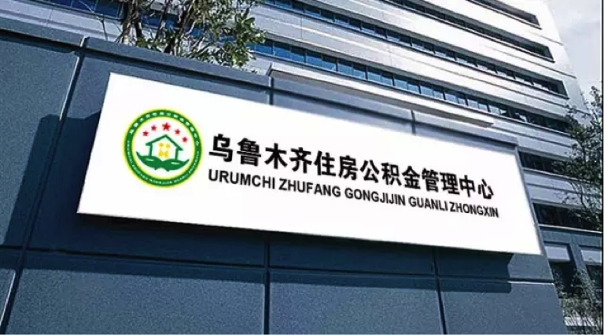
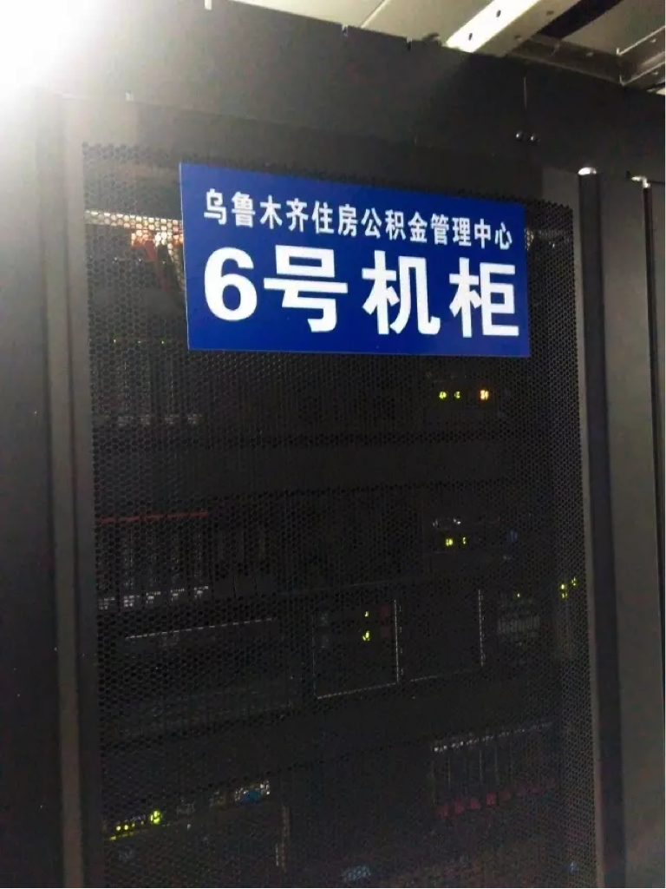
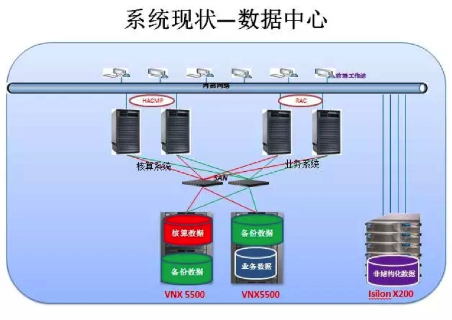
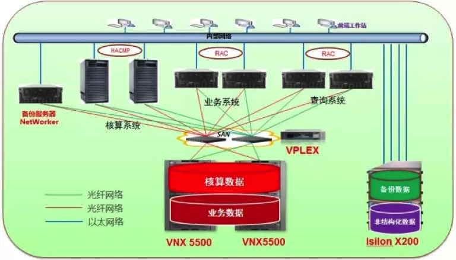

联想为你守护你的住房公积金
上年末，国务院法制办公室发布了《住房公积金管理条例（修订送审稿）》，时隔13年后，新修订的条例引起社会广泛关注，同时也给各地方住房公积金管理中心带来了更大的业务挑战。乌鲁木齐市住房公积金管理中心也面临着同样的考验，联想以端到端整体化解决方案成功帮助其应对业务痛点，更好为百姓服务。

2011年正式投入使用的信息管理系统，在乌鲁木齐市推进公积金管理规范化、便民化的进程中曾起到重要作用。但随着业务发展加快，尤其是新修订的管理条例，明确规定将扩大缴存覆盖面、扩大公积金的投资渠道和使用范围，这将给乌鲁木齐市公积金管理中心信息管理系统带来很大的压力。

在以核算系统和门户系统等为代表的关键系统上，主机层面均采用单机架构，且数据都是各自单独存放在2台VNX5500上，并通过手工备份的方式储存至另一台VNX5500，一旦其中一台主机出现故障，都会导致整体系统宕机，无法保证关键系统的连续性。同时，数据的安全性也是核心隐忧之一，管理中心没有备份数据的异地存放，不具备抵抗严重灾害的能力，如何能够通过备份进行快速、正确的恢复，保障数据的安全性成为一大问题。

固若金汤，联想筑起最后一道防线
借着乌鲁木齐公积金管理中心计划上线一批新的信息系统为契机，联想以专业、高效的服务，从顶层设计入手对整体数据中心进行了升级，建立了存储虚拟化的数据中心。具体包括：
>>>增加虚拟化解决方案产品VPLEX Local双引擎
通过引进联想VPLEX Local双引擎产品，将两个VNX5500形成一个存储池，利用VPLEX可以将分别在两个存储上的核算系统数据和业务系统数据相互镜像到另外的存储上，从而避免了单点故障。
>>>各系统的统一集中自动化备份
根据用户现有的IT环境，设计将Isilon X200存储划出专门的备份区域用于数据的备份,实现数据存储于不同的介质,再配置一台备份服务器，实现了核心数据的自动化备份。
>>>新建高可用主机系统
本次新建设的公积金自助查询等系统分别采用2台联想ThinkServer RQ940服务器结合数据库集群技术构建为双机高可用系统，实现应用系统主机层面的高可用，从而实现中心数据中心在主机、网络、存储三个层面的双冗余和高可用。

住房公积金被认为是老百姓重要的“钱袋子”，保证业务系统的可用性和数据安全性是关乎国计民生的大事。联想从顶层设计的高度，为乌鲁木齐公积金管理中心设计一套整体化的解决方案，将现有设备充分利用起来，在节省成本的同时，帮助客户解决业务系统面临的瓶颈，并为数据安全筑起一道坚固的防线，据了解，未来双方还将在云架构、异地容灾等方面展开合作，以更好的为民服务。